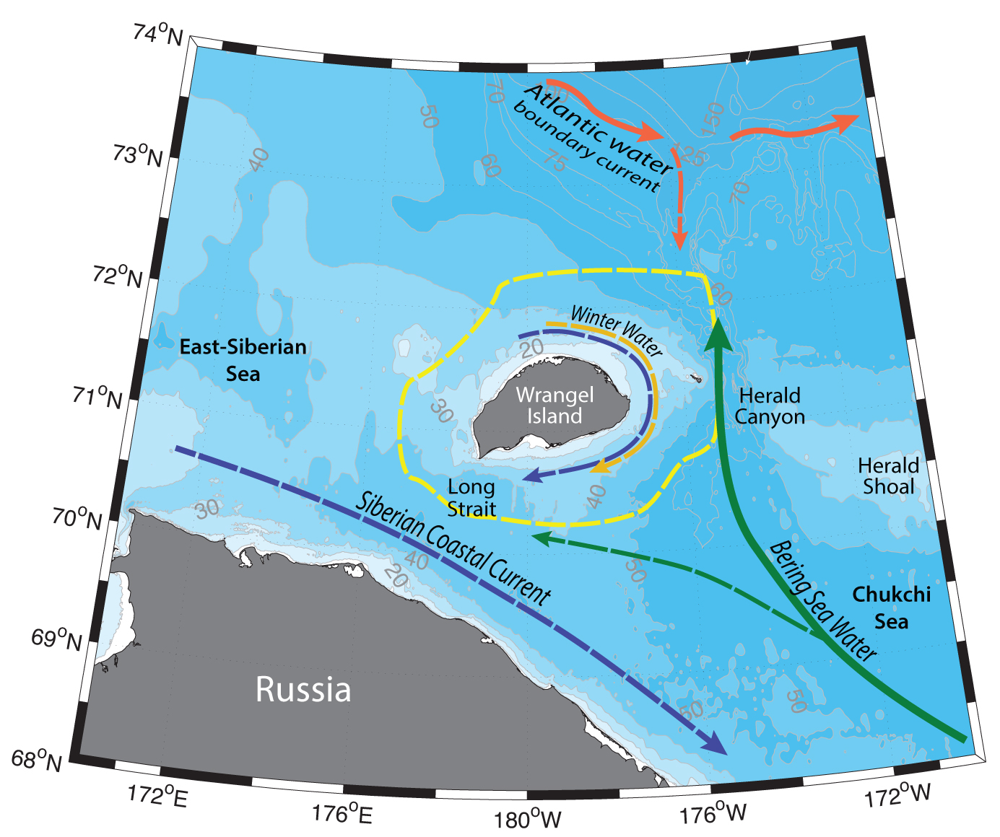

Schematic water circulation patterns and geographical place names in the Wrangel Island region. Adopted from Weingartner (1999), Pickart et al. (2010a), Pisareva et al. (2015a,b). Dashed line marks the studied region.
Wrangel island is situated on the wide and shallow (~50 m depth) Chukchi shelf, where hydrographic variability is rather high both on temporal and spatial scales. Hydrography of the Wrangel island region is determined by the Pacific water inflow from the Bering Strait, Siberian Coastal Current, upwellings of the Atlantic water onto the Chukchi Shelf, polynyas, formed close to the island, as well as the formation of the Winter Water locally in the polynyas.
Pacific-origin waters, flowing northward are following topographically steered pathways on the Chukchi shelf. Just to the east of Wrangel Island Herald Canyon serves as a natural topographic conduit for the waters exiting the Chukchi Shelf into the Arctic Basin. During summertime, Summer Bering Sea Water (BSW; T = 03°, 𝑆 = 3233; also referred to as Western Chukchi Summer water; e.g. Shimada et al., 2001), is advected northwards to the Arctic Basin through the Herald Canyon (e.g. Pickart et al., 2010a) and westwards through the Long Strait into the East-Siberian Sea (Weingartner et al., 1998; Woodgate et al., 2005a,b), however the latter pathway has not been established as a permanent branch (Pisareva et al., 2018). BSW is a product of mixing of nutrient-rich Anadyr Water and colder and fresher Bering Shelf Water (e.g. Coachman et al., 1975). During cold season this water mass is transformed into Pacific Winter Water (WW, also known as “Newly Ventilated Pacific Winter Water”; T < 1.6°) by convective overturning that lowers the temperature to near the freezing point. WW can also be formed and further transformed within polynyas (e.g. in the Northeast Chukchi Sea polynya or in the vicinity of Wrangel Island), leads and small openings on the Chukchi shelf, as well as mixed along the pathways on the shelf (Gong and Pickart, 2015). As a result of extreme salinization due to brine rejection Pacific Winter Water can be further transformed into Hypersaline Winter Water (HSWW; T < 1.6°, 𝑆 > 34 psu) (Itoh et al., 2015; Weingartner et al., 1998). In spring and summer solar heating and/or mixing with summer waters modify the WW into a product called Remnant Winter Water (RWW; T = 1.6 0°, 𝑆 > 31.5 – 34), which temperature is no longer near the freezing point. All these water masses are rich in nutrients.
Sometimes Alaskan Coastal Current can turn westwards into the Herald Canyon (e.g. under the influence of anomalous northerly winds; Pisareva et al., 2015a), bringing warm and fresh Alaskan Coastal Water (ACW; T >2 3°, 𝑆 < 32 psu), as well as Alaskan species of zooplankton to the Wrangel Island region.
Fresh and typically cold Siberian Coastal Water (SCW; 𝑆 < 30) is advected southeastwards along the Russian coast in the quasi-permanent Siberian Coastal Current (SCC; e.g. Weingartner et al., 1999; Pisareva et al., 2015a,b). It originates from the river run-off into Russian Arctic Seas. Two modes of the SCC are usually distinguished, influenced by the winds: westerly (downwelling favorable) winds create a sharp hydrographic front and the SCC is well-developed, while when the winds are easterly (upwelling favorable), the front is less distinct and the current is weakened or absent at all.
The upper part of the water column around Wrangel Island (as well as across the Arctic shelf) is usually occupied by the local Arctic meltwater and river runoff (usually defined by the 24 kg m3 isopycnal; e.g. Linders et al., 2017). All the mentioned water masses tend to get involved into anticyclonic circulation around the Wrangel Island (Pickart et al., 2010a; Pisareva et al., 2015a,b)
Upwellings at the mouth of Herald Canyon can bring warm and saline Atlantic Water (AW; T > 1.26°, 𝑆 > 33.64 psu) onto the Chukchi Shelf and to the Wrangel Island region (Aagaard and Roach, 1990; Coachman et al., 1975; Pickart et al., 2010a). Such occurrences of Atlantic Water are very important to the dynamics of the sea, as they can influence the formation and maintenance of polynyas (e.g. Ladd et al., 2016). Depending on the wind direction ice is being pushed away from different sides of the Wrangel Island. Easterly winds tend to open Wrangel Island polynya to the north of the island, while westerly winds open a polynya to the south. Upwellings of cold saline deep waters supply additional nutrients to the Chukchi Shelf.
Eddy formation at the mouth of Herald Canyon can enhance mixing of the water column in the region (e.g. Pickart et al., 2010a).